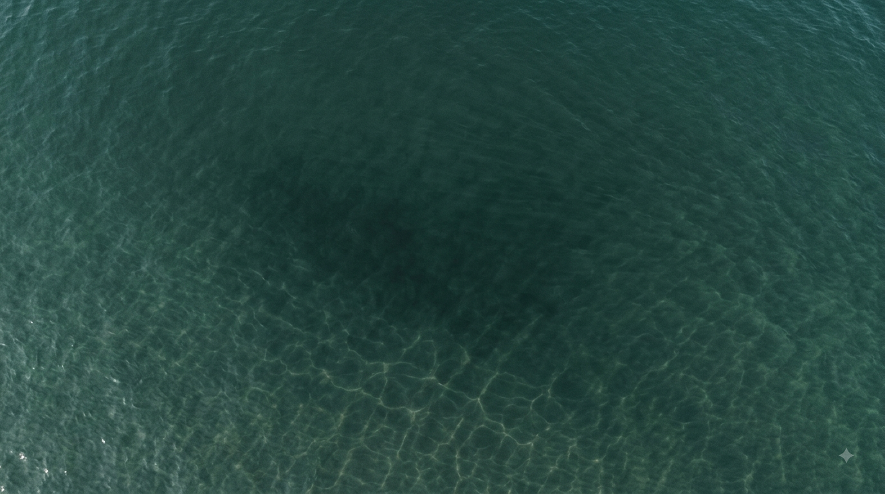

島の港を海洋実験場として使い、調べ、試し、確かめる。 科学的根拠をもって海の再生を進める「知の拠点」を、白石島に築く。

海が還れば、
まちは動きだす。
カブトガニ未来創成プロジェクト
SCROLL
カブトガニ未来創成プロジェクト

かつて豊かだった笠岡の海は、大きく様変わりした。海面漁業の水揚げは、平成19年の7億4,400万円から、令和6年には2億7,100万円へ。年ごとに増減を繰り返しながらも、長期では落ち込み続けている。タコ、シャコ、カレイ、ナマコ。当たり前に獲れていた魚が、静かに姿を消しつつある。
※ ピークは平成19年（7億4,400万円）。次の10年の試算は、過去18年の傾向がこのまま続いた場合の推計値。
海の衰退は、漁業だけでなく、まちの活力そのものを蝕んでいる。

この干潟を、次の世代に残す。
自然共生サイト登録へ
失われつつある海の自然環境を取り戻す。生物多様性を回復させ、人と自然が共生する持続可能な地域をつくる。それが漁業の再生、地域経済の活性化、環境教育、そしてまちの誇りへとつながっていく。

40年で海はきれいになった……
澄んでいるから、よく見える。
そこに、魚がいないことが。
目指すのは「元に戻す」ことではない。失われた海を回復させ、かつてを超える豊かな海へと増やしていくこと。それが「ネイチャーポジティブなまち笠岡」。

生きものがにぎわう、健全で豊かな海

海に関わり、学び、誇りを持つ市民と若者

再生した海が生む、漁業・観光・企業活動の活力

行政・企業・市民・研究機関が協働する。「カブトガニ環境応援団」を通じて寄附・協賛を集め、その資金を海洋環境改善事業へ投じる。研究機関が効果を科学的に検証し、成果を発信する。
調べ、守り、再生し、その拠点をつくる。ひとつひとつが次の一手につながり、めぐり続ける取り組みとして海を育てていく。
その拠点が、白石島。

笠岡諸島・白石島。この島にはすでに、海洋研究を実践する環境が整っている。 ここを「藻場再生の実証フィールド」として位置づけ、科学的な根拠をもって海の再生を進める。
島の港を海洋実験場として使い、調べ、試し、確かめる。 科学的根拠をもって海の再生を進める「知の拠点」を、白石島に築く。

豊かな海を、次の世代へ。
その一歩を、いま笠岡から。